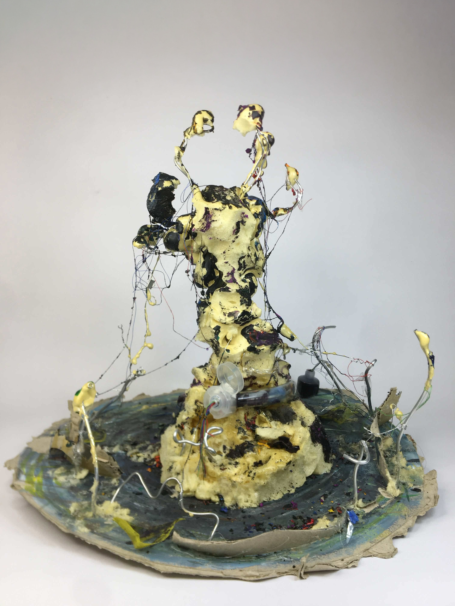
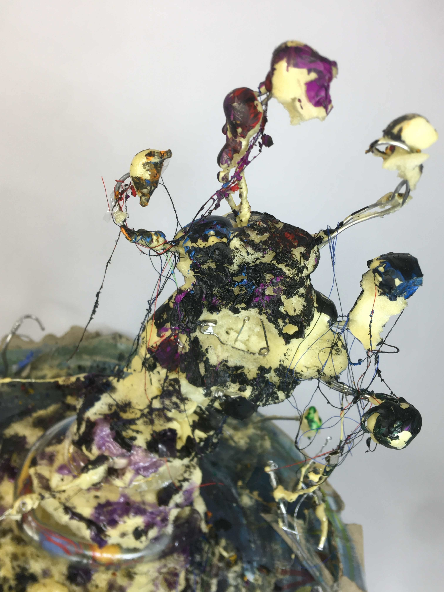
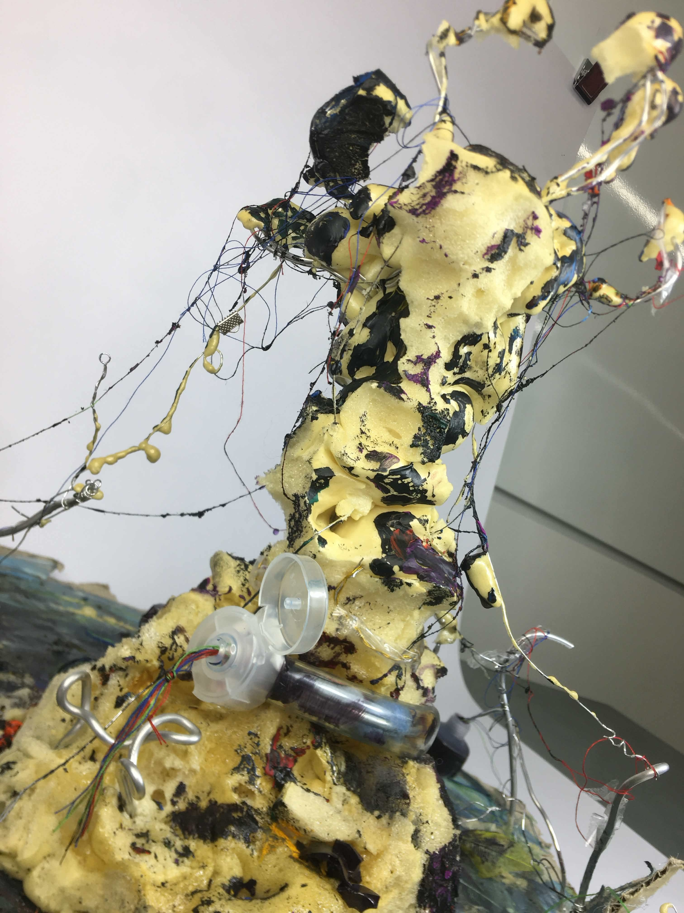

掙扎
複合媒材與立體作品

Info
類型｜ 複合媒材雕塑 媒材｜ 發泡劑、鐵線、顏料、複合素材
Concept
本作品以「掙扎」為核心概念，描繪在破碎與壓抑的狀態中，仍試圖尋找出口的過程。纏繞的線條象徵外在環境與內在壓力所形成的束縛，而延伸的肢體則呈現掙脫與對抗的動態。 作品在混亂與破碎的結構中，保留些微的色彩與形體，象徵即使處於低潮，仍存在改變的可能與微弱的希望。 本件為首次複合媒材創作，創作過程歷經材料使用上的失衡與反覆調整，最終透過多種媒材的整合，使作品更完整地呈現出對「掙扎」的理解與轉化。


